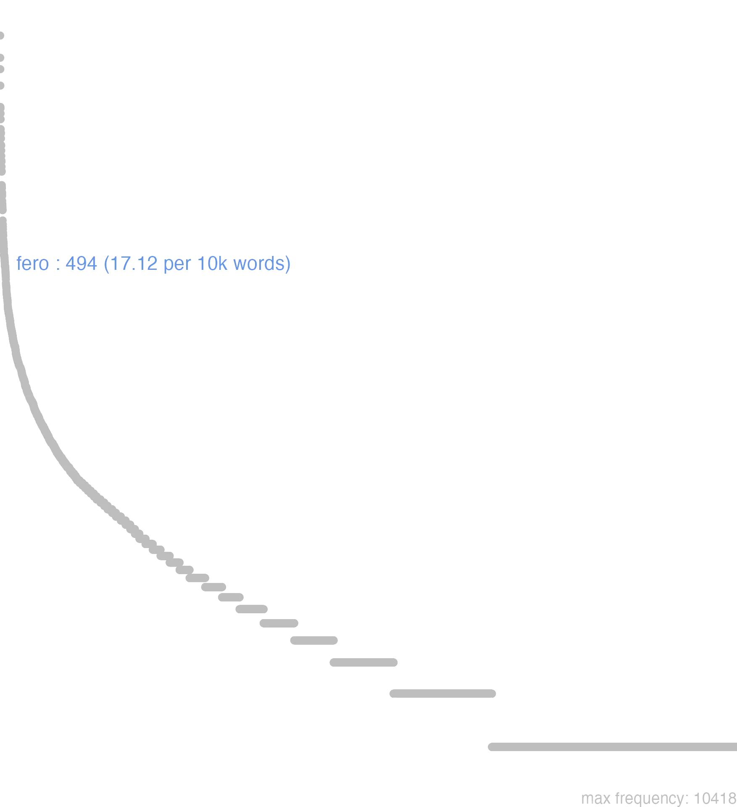

58 fero
58.0.0.1 bases lexicais
id: http://lila-erc.eu/data/id/lemma/103126
classe: verbo
paradigma: irregular
outras grafias:
variantes do lema:
fero presente | indicativo | 1ª pessoa singular | voz ativa
ferre presente | infinitivo | ativo
feret futuro | indicativo | 3ª pessoa singular | voz ativa
tuli, tetuli, toli pretérito perfeito | indicativo | 1ª pessoa singular | voz ativa
latum particípio passado | nominativo neutro singular
laturum particípio futuro | nominativo neutro singular
tŭlī
fĕr
fĕrō
lātum
58.0.0.2 dicionários tradicionais
fer
imperat. de fero.
ferō fers, ferre, tŭlī, lātum
v. tr.
Obs.: O perf. tetuli e formas derivadas ocorrem nos autores arcaicos e até nos poetas contemporâneos de Cícero e César.
imperat. de fero.
ferō fers, ferre, tŭlī, lātum
v. tr.
Obs.: O perf. tetuli e formas derivadas ocorrem nos autores arcaicos e até nos poetas contemporâneos de Cícero e César.
1 I-Sent. próprio Levar, trazer Cíc. Tusc. 2, 37:
2 I-Sent. próprio Trazer no ventre, estar grávida. produzir tratando-se de plantas T. Lív. I. 3–1. 3: C ie. Leg. 2, 67.
3 II-Sent. figurado: Suportar, sofrer, tolerar Cés. B. Gal. 3, 19, 3; Cíc. Tusc. 2, 46.
4 II-Sent. figurado: Propor uma lei, dar uma opinião, levar uma notícia ou fato, contar, expor Cíc. Of. ’2, 73: Cíc. Clu. 140: Cíc. Phil. 2. 110.
5 II-Sent. figurado: Impelir, empurrar, conduzir Cés. B. Civ. I. 27, 4.
6 II-Sent. figurado: Obter, conseguir, tirar, carregar, roubar C ie. At. 4, 15, 6; Verg. Buc. 5, 34; Verg. Buc. 9, 15.
7 II-Reflexivo ou passivo:
[EXEMPLOS]
1
lectica latus C ie. Phil. 2, 106 “levado trazido em liteira”: Cíc. Of. 3. 74.
7
ferre se ou ferri: dirigir-se, lançar-se Cés. B. Gal. 2, 24, 3 Cíc. Plane. 96.
fers
2ª pess. sing. pres. do indicat. de fero.
tetŭlī
perf. arcaico de fero com redobro = tuli Plaut. Men. 629.
tulī
perf. de fero.
Fĕro fērs tŭlī lātum fērrĕ
v. trans. e intrans. φέρω.
v. trans. e intrans. φέρω.
1 fazer alardo;
1 fazer gala de;
1 levar ou trazer, ter;
1 Ferre præ se. mostrar, manifestar, patentear, ostentar;
1 ter;
1 fig. trazer, andar, ou estar com;
2 levar para diante, transportar, mover, dirigir, levar, arrastar, impellir;
2 prolongar;
3 trazer, offerecer, apresentar, dar, propôr;
3 fig. trazer, produzir, causar;
4 destruir, acabar com, levar, matar;
4 tirar, tomar, pilhar, saquear, devastar;
5 obter, alcançar, conseguir, recolher, tirar, receber;
6 estar encarregado de;
6 supportar, soffrer, tolerar, curtir;
6 sustentar, manter;
7 levar a, excitar, estimular, convidar, pedir, exigir, requerer, querer;
7 permittir, admittir, comportar, supportar;
8 crear, dar, produzir, render;
9 annunciar, dizer, referir, contar, relatar;
9 pretender;
10 dar um parecer, a sua opinião, lavrar um decreto;
11 espalhar, disseminar, propalar, transmittir;
12 levantar, elevar, exaltar, alçar, elogiar, gabar;
13 guiar, levar, conduzir;
14 Phrases diversas.
[EXEMPLOS]
1
dixeram et præ me tuleram… Fronto Eu tinha dicto, e me havia gabado…
epistola erat lata Romam Fronto A carta tinha sido levada a Roma
ferre aperte Liv Manifestar, deixar vêr, patentear; não dissimular
ferre haud clam Cic Manifestar, deixar vêr, patentear; não dissimular
ferre humeris Ov. Petr Levar aos hombros
ferre in oculis Cic Amar como as meninas dos olhos
ferre non obscure Cic Manifestar, deixar vêr, patentear; não dissimular
ferre olera Ter Trazer legumes
ferre partum Plin Andar gravida, pejada, estar prenhe
ferre personam alienam Liv Trazer uma mascara, i. é, representar o papel d’outrem
ferre similitudinem Plin Assimilhar-se, parecer-se
ferre uenationem Liv Trazer caça
ferre uentrem Liv Andar gravida, pejada, estar prenhe
lectica latus est Cic Levaram-no em liteira
præ se ferre et confiteri facinus Cic Confessar uma acção e fazer gala d’ella
qui speciem doctrinæ præ se ferunt Cic Os que inculcam instrucção
semper præ me tuli… Cic Sempre tive por norma…
sic ora ferebat Virg Taes eram as suas feições
2
clamorem ferunt ad litora Virg Seus gritos chegam até ás praias
euri ferunt siluas Virg Os ventos varrem as florestas
fer stabulis ignem Virg Deita o fogo aos meus curraes
ferat Aufidus Hor Leve -os o rio Aufido
ferre arma Virg Pegar em armas; tomar armas;
ferre arma contra aliquem Nep Pegar em armas, tomar armas contra alguem
ferre arma in aliquem Liv Pegar em armas, tomar armas contra alguem
ferre corpus Ov Transportar-se, dirigir-se para, marchar, caminhar, andar, ir
ferre gradum Virg Transportar-se, dirigir-se para, marchar, caminhar, andar, ir
ferre gressum Virg Transportar-se, dirigir-se para, marchar, caminhar, andar, ir
ferre ictus Ov Dar golpes uma lança
ferre iter Virg Transportar-se, dirigir-se para, marchar, caminhar, andar, ir
ferre manum Plaut Combater
ferre manum in prœlia Virg Combater
ferre membra Ov Transportar-se, dirigir-se para, marchar, caminhar, andar, ir
ferre oculos ad… Virg Voltar os olhos para…
ferre pedem Virg Transportar-se, dirigir-se para, marchar, caminhar, andar, ir
ferre pedem choris Hor Fazer danças, dançar
ferre rabie Plin Sêr transportado de raiva
ferre se Virg Transportar-se, dirigir-se para, marchar, caminhar, andar, ir
ferre se obuiam Cic Sair ao encontro
ferre signa Liv Pôr-se em marcha um exercito
ferre sonitum Virg Fazer um ruído
ferre uestigia Virg Transportar-se, dirigir-se para, marchar, caminhar, andar, ir
ferre uitis in terram Cic A videira curva-se para o chão
ferri equis Virg Sêr arrebatado pelos cavallos
ferri in hostem Virg Avançar contra o inimigo
fertur flumen Hirt O rio corre
ludum in diem tulisset Virg Teria levado prolongado o jogo até o dia
qua tulisset impetum Just Por onde tivesse rompido
quo ferar? Virg Para que parte me hei de voltar?
tanto odio ferebatur in… Nep Tão violento era o odio que o levava contra…
uxor lata est pro… Ov A esposa foi levada, morreu em vez de…
3
ferre Cic Propôr alguma coisa ao povo
ferre ad populum Cic Propôr alguma coisa ao povo
ferre auxilium Cic Prestar soccorro, ajudar, auxiliar
ferre conditionem Cic Fazer uma proposta
ferre dona Virg Trazer presentes
ferre fastidia Virg Causar fastio, enjoar
ferre finem Virg Pôr termo, concluir, acabar
ferre grates Sil Agradecer
ferre iussa Virg Dar uma ordem
ferre legem Cic Apresentar uma lei
ferre opem Cic Prestar soccorro, ajudar, auxiliar
ferre oscula Ov Dar um beijo; dar abraços, abraçar
ferre osculum Fronto Dar um beijo;
ferre pacem Virg Trazer a paz
ferre præsidium Cic Prestar soccorro, ajudar, auxiliar
ferre preces Virg Dirigir supplicas
ferre rem Liv Propôr alguma coisa ao povo
ferre sacra Virg Offerecer um sacrificio
ferre solatia Prop Trazer consolações
ferre subsidium Cic Prestar soccorro, ajudar, auxiliar
ferre uoluptatem Ter Dar, causar prazer
quemcumque fors tulerit casum Cic Qualquer que seja o acontecimento que o acaso traga
4
alii rapiunt feruntque Pergama Virg Outros põem Troia a sacco
ferre passim cuncta atque agere Liv Levar a devastação e a pilhagem por toda a parte
omnia fert ætas, animum quoque Virg O tempo tudo leva, até a memoria
postquam te fata tulerunt Virg Depois que os destinos te levaram
5
agunt feruntque cuncta Tac Apoderam-se de tudo
ferre argentum ab aliquo Plaut Receber dinheiro de alguem
ferre centuriam Cic Conseguir os votos d’uma centuria
ferre decretum Liv Fazer admittir um decreto
ferre fructus Cic Tirar fructos
ferre impune Cæs. Cic Fazer impunemente alguma coisa; ficar sem castigo
ferre inultum Ter Fazer impunemente alguma coisa; ficar sem castigo
ferre liberos ex aliqua Suet Ter filhos d’uma mulher
ferre nomen insani Hor Sêr tido na conta de insensato
ferre palmam Cic Ganhar a palma
ferre tribum Cic Conseguir os votos d’uma tribu
ferre uictoriam Liv Obter a victoria
hanc sine me spem ferre Virg Deixa-me levar esta esperança
id a me responsum tulit Cic Esta foi a resposta que elle recebeu de mim
non feret quin uapulet Plaut Não ficará sem levar um bom castigo
6
eamdem fortunam tulit Camulogenus Cæs Camulogeno teve a mesma sorte
ferre ægre Cic Levar a mal, indignar-se
ferre æquo animo Cic Levar com paciencia; soffrer sem se queixar
ferre annos Ov. Inscr Viver, ter certo numero de annos
ferre casus Ov Soffrer perdas, passar por desventuras
ferre clementer Cic Levar com paciencia; soffrer sem se queixar
ferre damna Ov Soffrer perdas, passar por desventuras
ferre facile Sen Levar com paciencia; soffrer sem se queixar
ferre grauiter Cic Levar a mal, indignar-se
ferre impetum Cæs Sustentar o ataque
ferre indigne Cic Levar a mal, indignar-se
ferre iniquo animo Cic Levar a mal, indignar-se
ferre moleste Cic Levar a mal, indignar-se
ferre primas scil. partes. Cic Ter o primeiro logar; representar o primeiro papel
ferre repulsam Cic Soffrer uma recusa
ferre secundas scil. partes. Hor Ter o segundo logar; representar o segundo papel
ferre seruire Ov Consentir em sêr escravo, deixar-se escravisar
ferre supplicium Cæs Padecer supplicio
ferre timorem Ov Ter mêdo
ferre uetustatem Quint Estar guardado, conservar-se
ferres me, si idem dicerem? Cic Levarias a bem que eu dissesse a mesma coisa?
7
dum tempus tulit Ter Emquanto o tempo permittiu-lhe
fert animus dicere… Ov Tenho em mente cantar…
prout hominis facultates ferebant Cic Consoante o permittiam seus meios
quid tempus ferat O que a circumstancia exigir
quod natura fert in omnibus rebus Cic O que a naturesa permitte em todas as coisas, i. é, segundo o curso natural das coisas
si fert ita corde uoluntas Virg Se este é o teu desejo
si occasio tulerit Cic Se se offerecer occasião
si res ita fert Cic Se a necessidade o requerer
ut amor tuus fert Cic Conforme a tua amisade o quer
ut opinio mea fert Cic Segundo a minha opinião, a meu vêr
8
ferundo arbos peribit Cato A arvore definhará de tanto produzir
hæc ætas perfectum oratorem tulit Cic Este seculo produziu um orador perfeito
india fert ebenum Virg A India produz o ebano
9
dixisse fertur Phaed Refere-se que elle dissera
ferre se ciuem Tac Dar-se, declarar-se cidadão
ferre se nullius egentem Hor Presumir de não precisar de pessôa alguma
ferre se pro ciue Liv Dar-se, declarar-se cidadão
ferunt Cic. Virg Dizem, conta-se
missi ferebant… Tac Enviados contavam…
non sat idoneus pugnæ ferebaris Hor Tu eras reputado pouco capaz de combater
quæ nunc Samothracia fertur Virg Que agora é chamada Samothracia
quod fers, cedo Ter Dize as novas que trazes
se regiæ stirpis ferebat Vell Pretendia sêr de sangue real
si uera feram Virg Se eu digo a verdade
10
ferre iudicium Cic Dar um decreto
ferre sententiam Cic Emettir o seu parecer, dar a sua opinião
ferre suffragium Cic Dar o seu voto
11
carmina ferre per orbem Virg Espalhar versos por todo mundo
ferre sub auras, si qua tegunt Virg Divulgar os segredos
ferri per ora hominum Plin. J Andar de bocca em bocca, ter grande celebridade
fertur hoc in primis Ter Esta palavra tem voga
pericles, cuius scripta quædam feruntur Cic Pericles, de quem restam alguns escriptos
12
ferre ad astra Virg Elevar alguem até o ceu; pôl-o nos cornos da lua; encher de louvores; fazer um pomposo elogio
ferre ad sidera Virg Elevar alguem até o ceu; pôl-o nos cornos da lua; encher de louvores; fazer um pomposo elogio
ferre in cælum Cic Elevar alguem até o ceu; pôl-o nos cornos da lua; encher de louvores; fazer um pomposo elogio
ferre in maius uero Liv Exagerar uma coisa
ferre insigni laude Virg Elevar alguem até o ceu; pôl-o nos cornos da lua; encher de louvores; fazer um pomposo elogio
ferre laudibus Liv. Plin Elevar alguem até o ceu; pôl-o nos cornos da lua; encher de louvores; fazer um pomposo elogio
quid fuit in Graccho, quod tantopere ferretur? Cic Que eloquencia houve em Graccho, que merecesse sêr tão elogiada?
13
iter fert ad… Cæs. Virg O caminho leva ou vae dar a…
nisi illud, quod eo ferat, cognôris Cic Se tu não sabias o que conduz alli
uia fert ad… Cæs. Virg O caminho leva ou vae dar a…
14
ferre acceptum Ved. Acceptus
ferre calumniam Ved. Calumnia
ferre expensum alicui Cic Levar em conta a alguem, creditar
ferre fidem etc. Ved. Fides, etc
ferre tacitum… Cic. Liv Obter silêncio á cerca d’uma coisa…
fertur his uerbis epistola Cic A carta é concebida n’estes termos
Fero fers -tuli -latum ferre
1 Cic. trazer, levar.
2 produzir, gerar, occasionar.
3 soffrer, supportar.
4 referir, contar, dizer.
5 alcançar, obter.
pret. de Fero Tuli
Fero fers
Vide Prae, & Habeo.
Vide Prae, & Habeo.
1 levar, sofrer, trazer, receber, levantar
2 ponitur etiam pro Dicere
3 aliquandò pro Gignere, Prodùcere
[EXEMPLOS]
2
fertur conta-se
ferunt dizem, ou contaõ
X
ad Senatum, uel ad pópulum ferre consultar o Senado, ou povo sobre alguma cousa
ferre manum pelejar apud Virg. pro Conferre
ferre se in auro pro Ostentare
susque, deque fero apud veteres, i, sursùm, an deorsum res feratur, parvi facio
uetustatem durar muito, naõ se corromper alguma cousa com o tempo i, annos ferre
Fero -ers tuli latum
1 leuar. trazer. soffrer
58.0.0.3 dados de corpus
![This chart plots collocate by scoreSUBST, for the headword fero here are all the values plotted: collocate: moleste; scoreSUBST: 0. collocate: auxilium; scoreSUBST: 3. collocate: lex; scoreSUBST: 2. collocate: grauiter; scoreSUBST: 0. collocate: possum; scoreSUBST: 0. collocate: sententia; scoreSUBST: 2. collocate: ops; scoreSUBST: 2. collocate: arma; scoreSUBST: 2. collocate: animus; scoreSUBST: 2. collocate: non; scoreSUBST: 0. collocate: fortiter; scoreSUBST: 0. collocate: quaestio; scoreSUBST: 2. collocate: sui; scoreSUBST: 0. collocate: uix; scoreSUBST: 0. collocate: impetus; scoreSUBST: 2. collocate: Caesar; scoreSUBST: 0. collocate: auspicium; scoreSUBST: 2. collocate: caelum; scoreSUBST: 2. collocate: neque; scoreSUBST: 0. collocate: casus; scoreSUBST: 2. collocate: amicus; scoreSUBST: 2. collocate: facile; scoreSUBST: 0. collocate: laus; scoreSUBST: 2. collocate: signum; scoreSUBST: 2. collocate: certe; scoreSUBST: 0. collocate: labor; scoreSUBST: 2](./Media/wordcloud__xx102-101-114-111xx__BY_collocate_scoreSUBST.webp)
![This chart plots collocate by scoreADJ, for the headword fero here are all the values plotted: collocate: moleste; scoreADJ: 0. collocate: auxilium; scoreADJ: 0. collocate: lex; scoreADJ: 0. collocate: grauiter; scoreADJ: 0. collocate: possum; scoreADJ: 0. collocate: sententia; scoreADJ: 0. collocate: ops; scoreADJ: 0. collocate: arma; scoreADJ: 0. collocate: animus; scoreADJ: 0. collocate: non; scoreADJ: 0. collocate: fortiter; scoreADJ: 0. collocate: quaestio; scoreADJ: 0. collocate: sui; scoreADJ: 0. collocate: uix; scoreADJ: 0. collocate: impetus; scoreADJ: 0. collocate: Caesar; scoreADJ: 0. collocate: auspicium; scoreADJ: 0. collocate: caelum; scoreADJ: 0. collocate: neque; scoreADJ: 0. collocate: casus; scoreADJ: 0. collocate: amicus; scoreADJ: 0. collocate: facile; scoreADJ: 0. collocate: laus; scoreADJ: 0. collocate: signum; scoreADJ: 0. collocate: certe; scoreADJ: 0. collocate: labor; scoreADJ: 0](./Media/wordcloud__xx102-101-114-111xx__BY_collocate_scoreADJ.webp)
![This chart plots collocate by scoreVERBO, for the headword fero here are all the values plotted: collocate: moleste; scoreVERBO: 0. collocate: auxilium; scoreVERBO: 0. collocate: lex; scoreVERBO: 0. collocate: grauiter; scoreVERBO: 0. collocate: possum; scoreVERBO: 2. collocate: sententia; scoreVERBO: 0. collocate: ops; scoreVERBO: 0. collocate: arma; scoreVERBO: 0. collocate: animus; scoreVERBO: 0. collocate: non; scoreVERBO: 0. collocate: fortiter; scoreVERBO: 0. collocate: quaestio; scoreVERBO: 0. collocate: sui; scoreVERBO: 0. collocate: uix; scoreVERBO: 0. collocate: impetus; scoreVERBO: 0. collocate: Caesar; scoreVERBO: 0. collocate: auspicium; scoreVERBO: 0. collocate: caelum; scoreVERBO: 0. collocate: neque; scoreVERBO: 0. collocate: casus; scoreVERBO: 0. collocate: amicus; scoreVERBO: 0. collocate: facile; scoreVERBO: 0. collocate: laus; scoreVERBO: 0. collocate: signum; scoreVERBO: 0. collocate: certe; scoreVERBO: 0. collocate: labor; scoreVERBO: 0](./Media/wordcloud__xx102-101-114-111xx__BY_collocate_scoreVERBO.webp)
![This chart plots collocate by scoreADV, for the headword fero here are all the values plotted: collocate: moleste; scoreADV: 5. collocate: auxilium; scoreADV: 0. collocate: lex; scoreADV: 0. collocate: grauiter; scoreADV: 2. collocate: possum; scoreADV: 0. collocate: sententia; scoreADV: 0. collocate: ops; scoreADV: 0. collocate: arma; scoreADV: 0. collocate: animus; scoreADV: 0. collocate: non; scoreADV: 2. collocate: fortiter; scoreADV: 2. collocate: quaestio; scoreADV: 0. collocate: sui; scoreADV: 0. collocate: uix; scoreADV: 2. collocate: impetus; scoreADV: 0. collocate: Caesar; scoreADV: 0. collocate: auspicium; scoreADV: 0. collocate: caelum; scoreADV: 0. collocate: neque; scoreADV: 0. collocate: casus; scoreADV: 0. collocate: amicus; scoreADV: 0. collocate: facile; scoreADV: 2. collocate: laus; scoreADV: 0. collocate: signum; scoreADV: 0. collocate: certe; scoreADV: 2. collocate: labor; scoreADV: 0](./Media/wordcloud__xx102-101-114-111xx__BY_collocate_scoreADV.webp)
![This chart plots collocate by scoreFUNC, for the headword fero here are all the values plotted: collocate: moleste; scoreFUNC: 0. collocate: auxilium; scoreFUNC: 0. collocate: lex; scoreFUNC: 0. collocate: grauiter; scoreFUNC: 0. collocate: possum; scoreFUNC: 0. collocate: sententia; scoreFUNC: 0. collocate: ops; scoreFUNC: 0. collocate: arma; scoreFUNC: 0. collocate: animus; scoreFUNC: 0. collocate: non; scoreFUNC: 0. collocate: fortiter; scoreFUNC: 0. collocate: quaestio; scoreFUNC: 0. collocate: sui; scoreFUNC: 0. collocate: uix; scoreFUNC: 0. collocate: impetus; scoreFUNC: 0. collocate: Caesar; scoreFUNC: 0. collocate: auspicium; scoreFUNC: 0. collocate: caelum; scoreFUNC: 0. collocate: neque; scoreFUNC: 0. collocate: casus; scoreFUNC: 0. collocate: amicus; scoreFUNC: 0. collocate: facile; scoreFUNC: 0. collocate: laus; scoreFUNC: 0. collocate: signum; scoreFUNC: 0. collocate: certe; scoreFUNC: 0. collocate: labor; scoreFUNC: 0](./Media/wordcloud__xx102-101-114-111xx__BY_collocate_scoreFUNC.webp)
![This charts plots the frequency of lemma by author_Frequencies. The Vergilius subcorpus registers the highest normalized frequency, with the value of 34.75 and an absolute frequency of 18. The Suetonius subcorpus follows, with a normalized frequency of 22.05 and an absolute frequency of 2. the subcorpus with the least normalized frequency is Hieronymus with the normalized value of 4.49 and an absolute freqeuncy of 2. here are all the values: subcorpus: Caesar ; normalized frequency: 45 ; absolute frequency: 16.9952413324269. subcorpus: Cicero ; normalized frequency: 268 ; absolute frequency: 16.6953228177718. subcorpus: Horatius ; normalized frequency: 22 ; absolute frequency: 19.5364532457153. subcorpus: Ovidius ; normalized frequency: 12 ; absolute frequency: 20.5902539464653. subcorpus: Phaedrus ; normalized frequency: 12 ; absolute frequency: 18.2177015333232. subcorpus: Sallustius ; normalized frequency: 6 ; absolute frequency: 5.56534644281607. subcorpus: Seneca ; normalized frequency: 103 ; absolute frequency: 19.223232115862. subcorpus: Suetonius ; normalized frequency: 2 ; absolute frequency: 22.0507166482911. subcorpus: Tacitus ; normalized frequency: 4 ; absolute frequency: 13.7315482320632. subcorpus: Vergilius ; normalized frequency: 18 ; absolute frequency: 34.7490347490347. subcorpus: Hieronymus ; normalized frequency: 2 ; absolute frequency: 4.49337227589306](./Media/barchart__xx102-101-114-111xx__lemma_BY_author_Frequencies.webp)
![This charts plots the frequency of lemma by genre_Frequencies. The Poesia.épica subcorpus registers the highest normalized frequency, with the value of 34.75 and an absolute frequency of 18. The Poesia.trágica subcorpus follows, with a normalized frequency of 31.27 and an absolute frequency of 36. the subcorpus with the least normalized frequency is Prosa.ficcional with the normalized value of 4.49 and an absolute freqeuncy of 2. here are all the values: subcorpus: Prosa.histórica ; normalized frequency: 57 ; absolute frequency: 13.8757029138976. subcorpus: Prosa.filosófica ; normalized frequency: 105 ; absolute frequency: 17.2979028352086. subcorpus: Prosa.oratória ; normalized frequency: 150 ; absolute frequency: 14.4018895279061. subcorpus: Prosa.epistolográfica ; normalized frequency: 80 ; absolute frequency: 21.1982299477994. subcorpus: Poesia.lírica ; normalized frequency: 23 ; absolute frequency: 19.3488685118196. subcorpus: Poesia.didática ; normalized frequency: 23 ; absolute frequency: 19.5097124438035. subcorpus: Poesia.trágica ; normalized frequency: 36 ; absolute frequency: 31.2717164697707. subcorpus: Poesia.épica ; normalized frequency: 18 ; absolute frequency: 34.7490347490347. subcorpus: Prosa.ficcional ; normalized frequency: 2 ; absolute frequency: 4.49337227589306](./Media/barchart__xx102-101-114-111xx__lemma_BY_genre_Frequencies.webp)
![This charts plots the frequency of lemma by period_Frequencies. The I.d.C. subcorpus registers the highest normalized frequency, with the value of 19.27 and an absolute frequency of 126. The I.a.C. subcorpus follows, with a normalized frequency of 16.76 and an absolute frequency of 360. the subcorpus with the least normalized frequency is IV.d.C. with the normalized value of 4.49 and an absolute freqeuncy of 2. here are all the values: subcorpus: I.a.C. ; normalized frequency: 360 ; absolute frequency: 16.7558761926926. subcorpus: I.d.C. ; normalized frequency: 126 ; absolute frequency: 19.2748967416246. subcorpus: II.d.C. ; normalized frequency: 6 ; absolute frequency: 15.7068062827225. subcorpus: IV.d.C. ; normalized frequency: 2 ; absolute frequency: 4.49337227589306](./Media/barchart__xx102-101-114-111xx__lemma_BY_period_Frequencies.webp)
tulit Caesar graviter
Cic.Att.2.19.3
César suportou com muito custo. [JDD]
moleste tulit Scaptius
Cic.Att.5.21.10
Escápcio ficou aborrecido. [JDD]
id ne igitur inquies facile fers
Cic.Att.4.18.2
“E isso então”, dirás, “suportas facilmente?” [JDD, de outra edição]
ecce aliae deliciae equitum vix ferendae
Cic.Att.1.17.9
Eis aqui outro capricho dos cavaleiros difícil de tolerar. [JDD]
et quidem quam sententiam feram adtende
Sen.Ep.22.3
E, na verdade, presta atenção no parecer que vou dar. [JDD]
quod te moleste ferre certo scio
Cic.Att.1.12.3
E sei com certeza que tu o suportas penosamente. [JDD]
putas ne fore ut legem non ferat
Cic.Att.4.8A.1
Achas que ele não vai propor sua lei? [JDD, de outra edição]
in illa temet nemora quis casus tulit
Sen.Oed.809
E que acaso te levou a ti àqueles bosques? [JDD]
nec iam ipsi agri regnum vestrum ferre possunt
Cic.Att.2.13.2
nem os próprios campos já podem suportar o vosso despotismo. [JDD]
non esse Romae meo tempore pernecessario submoleste fero
Cic.Att.5.21.1
mas fico meio aborrecido que não estejas em Roma nesse meu momento extremamente necessario. [JDD]
In nova fert animus mutatas dicere formas corpora ;
Ov.Met.1.1-2
O espírito me leva a relatar as formas mudadas em novos corpos. [JDD]
hoc vero regnum est et ferri nullo pacto potest
Cic.Att.2.12.1
Isso na verdade é tirania e não pode ser tolerado de modo algum. [JDD]
num igitur ulla quaestio de Africani morte lata est
Cic.Mil.16
Por ventura algum inquérito sobre a morte do Africano foi então proposto? [JDD]
haec populum Romanum uidere animaduertere iudicare quidam moleste ferunt
Cic.Phil.14.19.1
Alguns suportam penosamente que o povo romano veja, note, julgue essas coisas. [JDD]
quibus rebus perturbatis nostris tempore opportunissimo Caesar auxilium tulit
Caes.Gal.4.34.1
Por essas coisas, César levou auxílion os nossos, perturbados por causa da novidade da luta, em tempo oportuníssimo. [JDD, de outra edição]
timere se dicunt quo modo ferant ueterani exercitum Brutum habere
Cic.Phil.10.15.2
Dizem que temem como suportam os veteranos que Bruto tenha um exército. [JDD]
ite ferte depositis opem mortifera me cum uitia terrarum extraho
Sen.Oed.1057
Ide, levai ajuda para os desesperados: eu arrato comigo os mortíferos vícios desta terra. [JDD]
his persuaderi ut diutius morarentur neque suis auxilium ferrent non poterat
Caes.Gal.2.10.5
Não era possível persuadir a estes que demorassem mais tempo e não levassem socorro aos seus. [JDD]
tum diceres Caesar caue credas fuit in Africa tulit arma contra te
Cic.Lig.16
Então dirias: “César, não creias; ele esteve na África, tomou armas contra ti!” [JDD]
quid ista sacri signa terrifici ferant exprome uoces aure non timida hauriam
Sen.Oed.384
Explica o que nos trazem esses sinais do pavoroso sacrifício: devorarei tuas palavras com o ouvido não temeroso. [JDD]
commisso proelio diutius nostrorum militum impetum hostes ferre non potuerunt ac terga uerterunt
Caes.Gal.4.35.2
Travado o combate, os inimigos não puderam aguentar por muito tempo o ímpeto de nossos soldados e voltaram as costas. [JDD]
quia non poteram uos istis subducere animos uestros aduersus omnia armaui ferte fortiter
Sen.Prov.6.6
Uma vez que eu não podia tirar-vos debaixo delas, armei os vossos ânimos contra todas. Suportai-as com coragem. [JDD]
ipse hostis Teucros insigni laude ferebat seque ortum antiqua Teucrorum a stirpe uolebat
Verg.A.1.625
Ele próprio, embora inimigo, exaltava os troianos com insigne louvor e se pretendia nascido da antiga estirpe dos troianos. [JDD]
quemadmodum coepit sic desinet parauit amicum aduersum uincla laturum opem cum primum crepuerit catena discedet
Sen.Ep.9.8
Do mesmo modo como começou, terminará: buscou um amigo que lhe traria ajuda para sair da prisão; ao primeiro estalo que corrente fizer, ele irá embora. [JDD]
lucidum caeli decus huc ades uotis quae tibi nobiles Thebae Bacche tuae palmis supplicibus ferunt
Sen.Oed.405
glória brilhante do céu, atende aqui os votos que tua nobre Tebas, com as mão suplicantes, te traz. [JDD]
iuuat me haec praeclara nomina artificum quae isti ad caelum ferunt Uerris aestimatione sic concidisse
Cic.Ver.2.4.12.9
Agrada-me que estes ilustres nomes de artistas, que esses elevam até o céu, tenham caído desse modo na avaliação de Verres. [JDD]
uinum ad se omnino importari non patiuntur quod ea re ad laborem ferendum remollescere homines atque effeminari arbitrantur
Caes.Gal.4.2.5
Não permitem de modo algum que seja importado vinho para eles, porque julgam que por tal coisa os homens perdem o vigor para suportar o trabalho e se tornam efeminados. [JDD, de outra edição]
leges statuimus per uim et contra auspicia latas eisque nec populum nec plebem teneri num eas restitui posse censetis
Cic.Phil.12.12.2
Estabelecemos que suas leis tinham sido apresentadas através da violência e contra os auspícios e que nem o povo nem a plebe são obrigados a elas; acaso pensais que elas podem ser restituídas? [JDD]
58.0.0.4 Diagrama de Zipf
